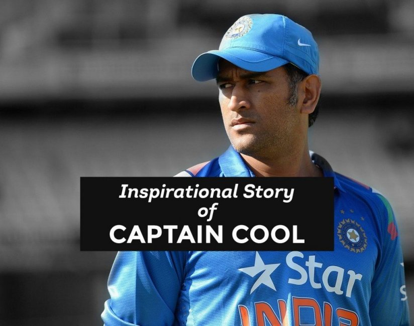

I'm Kiran Raut
a programmer.

I am a Computer Science and Enginnering student at Walchand College of Enginnering, Sangli. I 🧡 developing Flutter Apps and Web Applications.

Computer Science and Enginnering
CGPA: 7.1
Computer Enginnering
Percentage: 90.94%

Semi English
Percentage: 79.20%
C
C++
I have learn these Programming Languages in Diploma.

I started Java Programming when I was in Diploma third year I wanted to become a excellent Java Programmer.

I started code 6 months ago I wanted to make my own Websites & Apps. Over time, I gained experience designing and developing Mobile Apps using Flutter or Android and Web Applications.

I started coding 1 month ago for cracking coding round in interview.
Proficiency Level:
Read ✔️
Write ✔️
Speak ✔️
Proficiency Level:
Read ✔️
Write ✔️
Speak ✔️
Proficiency Level:
Read ✔️
Write ✔️
Speak ✔️
The aim of this project is to maintain the Automation of record of
handling the various records. Along with this Staff Reporting system
we have developed System to take information about the Syllabus
covered by Staff and Percentage Attendance of Class for Every Lecture.
Once online record is filled by every Staff then Admin which may be
Principal, Vice Principal, and Management Representative may track the
daily working of Each Staff.
Tech Stack : HTML, CSS, Javascript, Bootstrap
• Student of the year in Academics (2019)
• 3 rd Ranker – Paper Presentation HORIZON (Shrirampur) (2019)
• Winner – Poster Presentation PANCHRANG (2018) (2019)
• Student of the year in Academics (2018)
• Winner – Paper Presentation PANCHRANG (2018)
• Watching Cricket Matches and Movies
• Playing Games
Everyone knows how popular cricket is in India. And in the last decade, the cricketer who has received the most love from all over the world including India is Mahendra Singh Dhoni. Today, who does not know Mahendra Singh Dhoni as a good cricketer.
Mahendra Singh Dhoni as a captain has taken Team India to a different level. This is the reason why India has consistently occupied the largest trophies since last decade.
His journey marks from being a simple small town boy to the man who led a team to victories in the all three ICC trophies.
There was once a time when the Indian Cricket Team was simply filled with the city kids. Due to excellent infrastructure and good scope for the game in cities, many small town boys would not succeed defeating them in the Ranji Trophy. But this man proved it all wrong. MSD had seen a dream, which many feared to see.
Hailing from a very small town of Ranchi, Dhoni dared to dream and with courage and guts make that dream a reality. Since a very young age, he idolized Sachin Tendulkar who is known as the God of Cricket and Bollywood actor Amitabh Bachchan. He started his career as a Ticket Collector in Indian Railways. His hard work and never-give-up spirit finally landed him in International Cricket in 2003.
Dhoni was not only known for his cricket but was also very popular for his lengthy wavy hair style. In fact, it had then become a trend that every boy in the country now wanted to adorn the “Dhoni Hairstyle”.
Dhoni started making rounds for his cool attitude – something we all most aspire to emulate. We would find him with a smile even in the toughest of games. This calm attitude of his landed him as the Captain of the team. He had not only made his dream of playing alongside his idol Sachin a reality but had become his captain.
Under Dhoni’s captaincy, the Indian cricket team has captured all three ICC trophies and Dhoni is the only captain in the world who has done this feat. He continues to inspire the younger generation with his brilliant captaincy, and out of the box thinking.
Mobile No: 7709380959
To mailing me Click On bellow button.